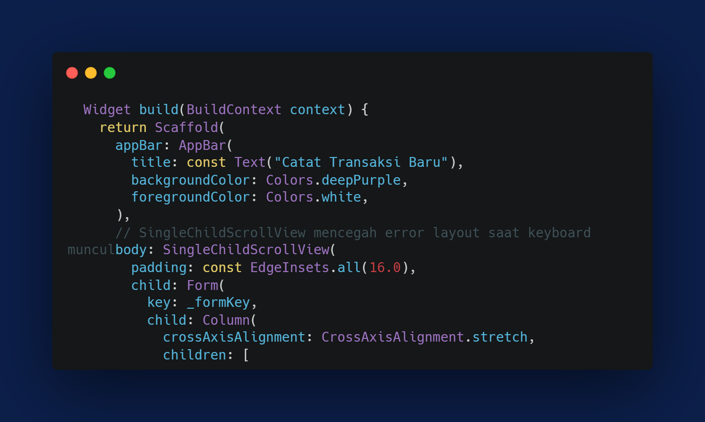
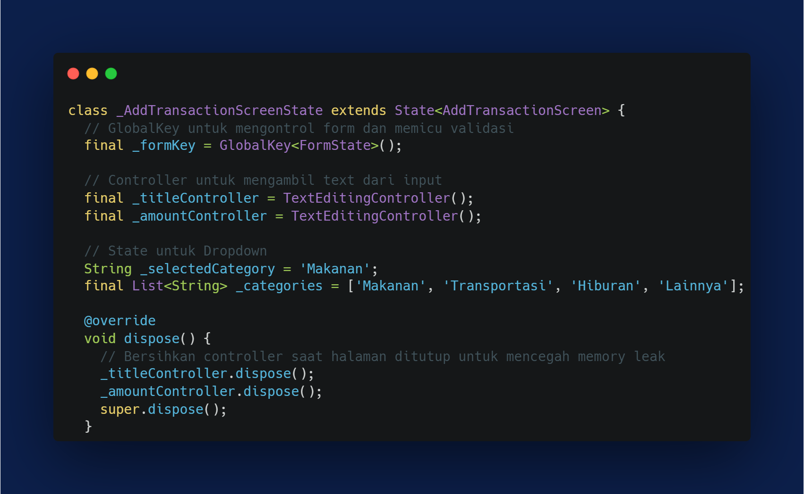
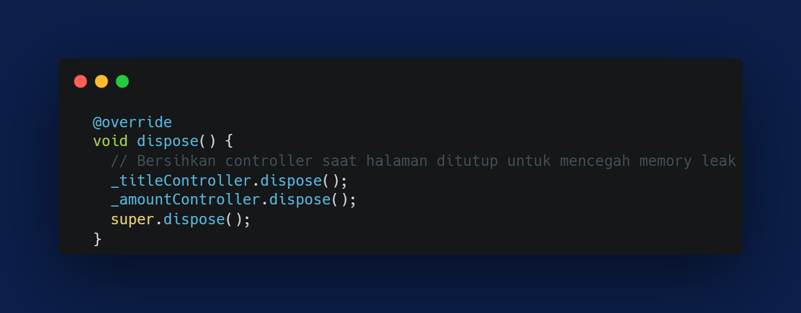
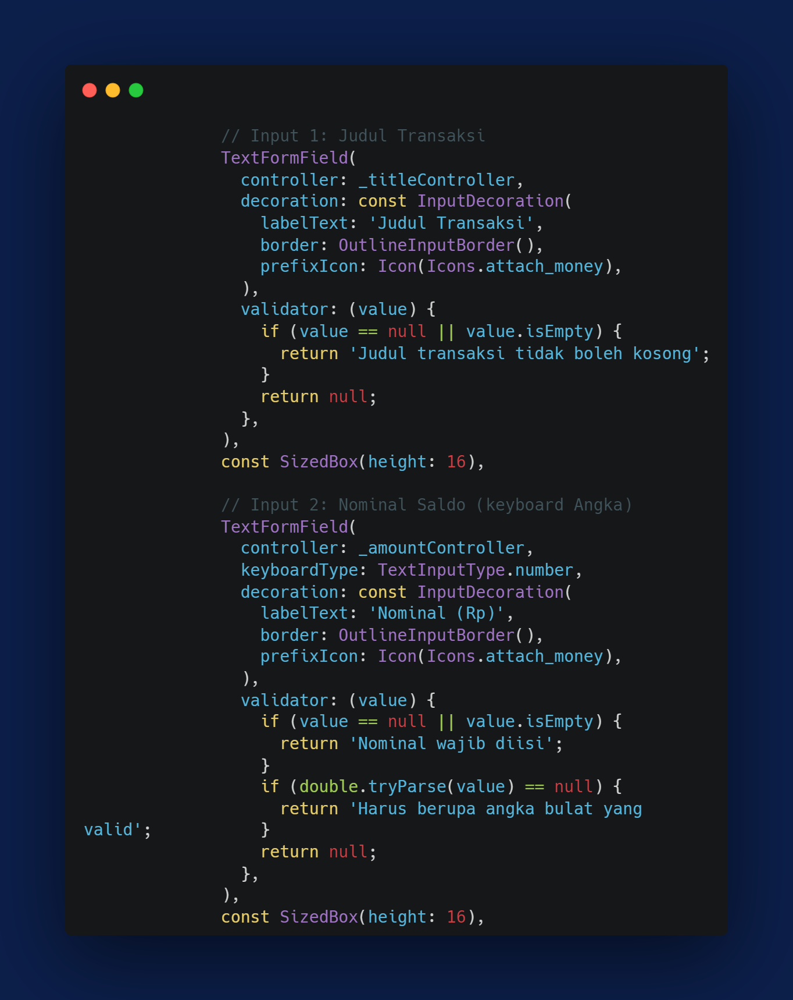
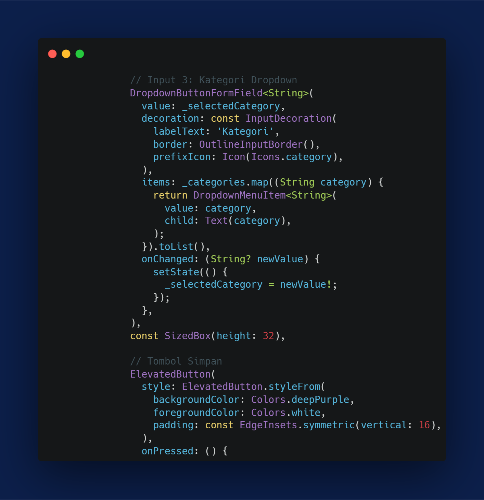
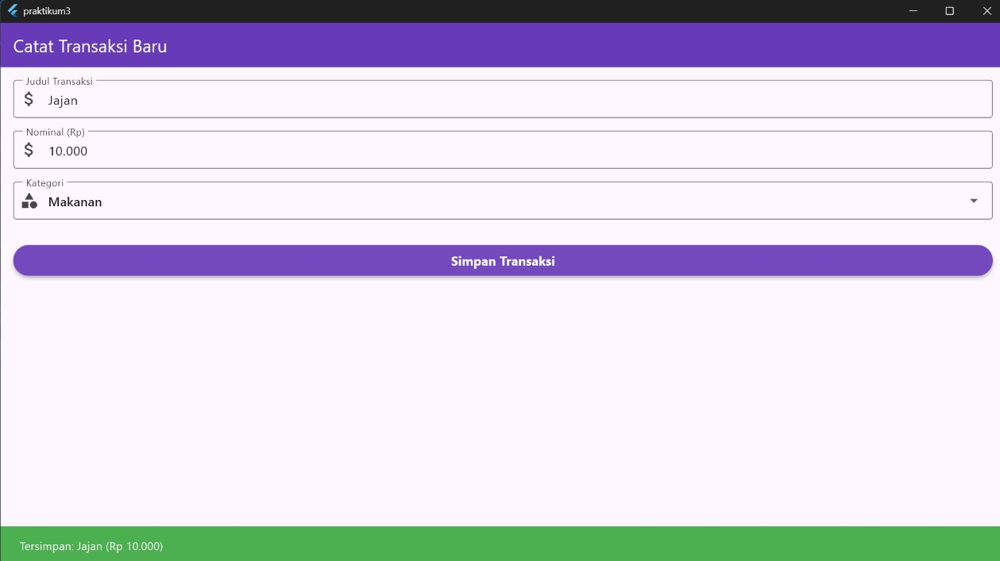
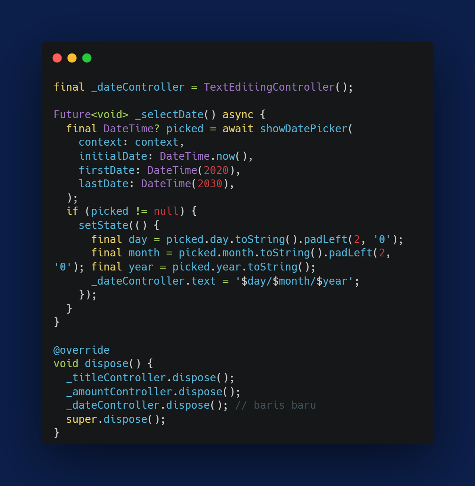
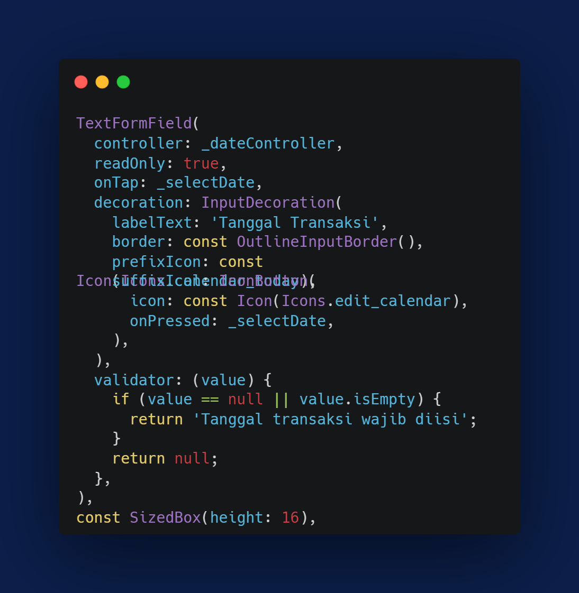
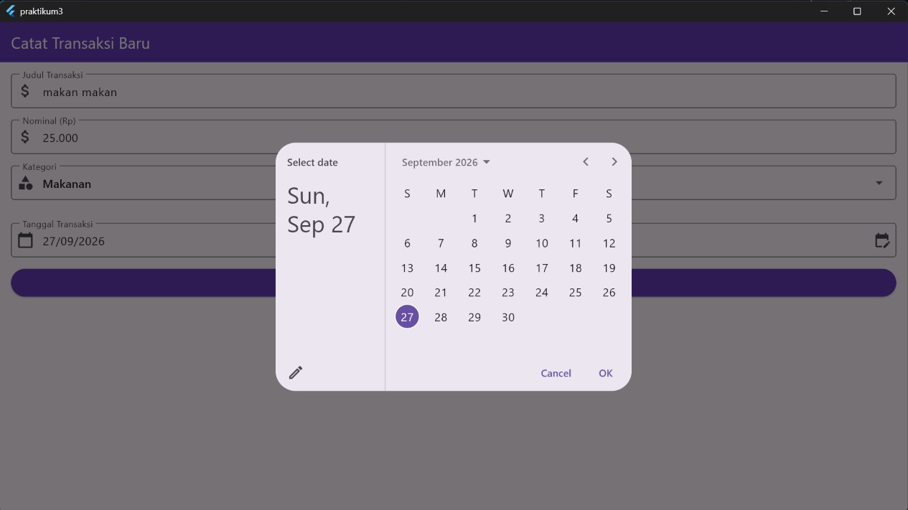
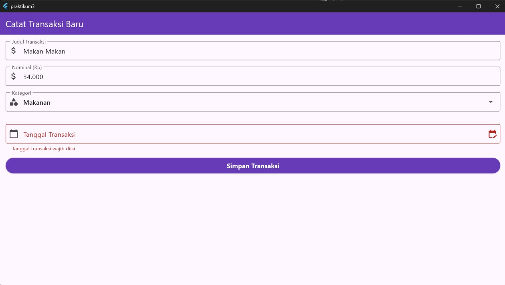

Laporan Praktikum Aplikasi Mobile: Input Widgets & Forms; Menangkap Data, Dropdown, dan Validasi
1. Pendahuluan
Praktikum ketiga Aplikasi Mobile ini membahas pembuatan formulir input pada Flutter menggunakan TextFormField, DropdownButtonFormField, serta mekanisme validasi data melalui GlobalKey dan FormState. Studi kasus yang diterapkan adalah halaman Catat Transaksi Baru yang menangkap judul transaksi, nominal, dan kategori dari pengguna sebelum data tersebut diproses lebih lanjut oleh aplikasi.
Tujuan Praktikum:
- Mahasiswa mampu menangkap teks masukan pengguna menggunakan TextEditingController.
- Mahasiswa mampu menerapkan widget dropdown statis menggunakan DropdownButtonFormField.
- Mahasiswa mampu menerapkan validasi input untuk mencegah data kosong atau format yang tidak sesuai.
2. Langkah Kerja
A. Struktur Dasar Halaman (Scaffold, AppBar & SingleChildScrollView)

Kode Program: Struktur Scaffold, AppBar, dan Pembungkus FormMethod build mengembalikan Scaffold dengan AppBar berjudul "Catat Transaksi Baru" berwarna deepPurple. Isi halaman dibungkus SingleChildScrollView agar tampilan tidak overflow saat keyboard muncul, lalu widget Form dengan key: _formKey membungkus Column crossAxisAlignment.stretch yang menampung seluruh kolom input, dropdown, dan tombol agar lebarnya memenuhi layar.
B. Persiapan State & Controller

Kode Program: Struktur _AddTransactionScreenStateAddTransactionScreen dibuat sebagai StatefulWidget karena isi formulir berupa teks dan pilihan dropdown akan terus berubah seiring interaksi pengguna. Pada class _AddTransactionScreenState dideklarasikan _formKey bertipe GlobalKey<FormState> sebagai kunci utama untuk memicu validasi seluruh kolom sekaligus, dua TextEditingController (_titleController dan _amountController) untuk menampung teks judul dan nominal, serta variabel _selectedCategory bertipe String dengan nilai awal 'Makanan' untuk menyimpan kategori yang sedang dipilih pada dropdown.
C. Membersihkan Controller (dispose())

Kode Program: Method dispose()Method dispose() dioverride untuk memanggil dispose() pada _titleController, _amountController, dan _dateController sebelum memanggil super.dispose(), sehingga seluruh controller dibersihkan dari memori ketika halaman AddTransactionScreen sudah tidak digunakan lagi dan aplikasi terhindar dari memory leak.
D. Membuat Kolom Input (TextFormField)

Kode Program: TextFormField Judul dan Nominal TransaksiSeluruh kolom input dibungkus widget Form dan dihubungkan melalui key: _formKey. Kolom pertama menggunakan TextFormField dengan controller _titleController, decoration labelText "Judul Transaksi", dan validator yang mengembalikan pesan error apabila value kosong. Kolom kedua menggunakan controller _amountController dengan keyboardType: TextInputType.number agar papan ketik yang muncul berupa angka, serta validator bertingkat yang memeriksa apakah value kosong terlebih dahulu, kemudian memeriksa apakah value dapat dikonversi menjadi angka melalui int.tryParse sebelum dianggap valid.
E. Dropdown & Tombol Simpan

Kode Program: DropdownButtonFormField dan Tombol SimpanKategori transaksi ditangkap melalui DropdownButtonFormField<String> dengan value terikat pada _selectedCategory dan items yang dibangun dari daftar kategori menggunakan method map, masing-masing dibungkus DropdownMenuItem. Properti onChanged memanggil setState untuk memperbarui _selectedCategory setiap kali pengguna memilih opsi baru. Di bawahnya, ElevatedButton "Simpan Transaksi" pada onPressed memanggil _formKey.currentState!.validate() untuk menjalankan seluruh validator secara serentak; apabila hasilnya true, SnackBar ditampilkan sebagai tanda bahwa data telah lolos validasi.
Hasil Akhir

Hasil Akhir: Mockup Formulir Catat TransaksiHalaman menampilkan AppBar berwarna ungu bertuliskan "Catat Transaksi Baru", diikuti kolom Judul Transaksi, kolom Nominal yang menampilkan pesan error berwarna merah apabila format yang dimasukkan bukan angka, dropdown Kategori dengan opsi bawaan "Makanan", dan tombol Simpan Transaksi di bagian bawah. SnackBar hijau muncul setelah tombol ditekan apabila seluruh kolom telah terisi dengan format yang benar.
3. Tugas/Latihan: Menambahkan Input Tanggal Transaksi
A. Menyiapkan Controller dan Fungsi Pilih Tanggal

Kode Program: Controller dan Fungsi _selectDateDitambahkan TextEditingController baru bernama _dateController untuk menampung teks tanggal yang telah dipilih, beserta method _selectDate yang memanggil showDatePicker dan menunggu tanggal yang dipilih pengguna melalui date picker bawaan Flutter. Setelah tanggal dipilih, nilai day, month, dan year pada objek DateTime hasil pilihan diformat secara manual ke pola DD/MM/YYYY menggunakan padLeft(2, '0') agar tanggal dan bulan satu digit tetap tampil dua digit, tanpa memerlukan package tambahan, kemudian hasilnya ditetapkan ke dalam _dateController.text.
B. Menambahkan Input Tanggal pada Form

Kode Program: TextFormField Tanggal TransaksiSebuah TextFormField baru ditambahkan sebelum tombol Simpan Transaksi, dengan controller _dateController, properti readOnly bernilai true agar keyboard tidak muncul, serta suffixIcon berupa IconButton kalender yang memanggil _selectDate saat ditekan. Validator pada kolom ini mengembalikan pesan error apabila _dateController.text masih kosong, sesuai instruksi tugas yang mewajibkan pengisian tanggal.
Hasil Tampilan Tugas

Hasil Tampilan Tugas: Kolom Tanggal TerisiSetelah ikon kalender ditekan dan tanggal dipilih melalui date picker, kolom Tanggal Transaksi menampilkan teks tanggal dengan format DD/MM/YYYY, sejajar dengan kolom-kolom input lain di atasnya sebelum tombol Simpan Transaksi.

Hasil Tampilan Tugas: Validasi Kolom Tanggal KosongApabila tombol Simpan Transaksi ditekan sementara kolom Tanggal Transaksi belum diisi, pesan error berwarna merah muncul di bawah kolom tersebut bersamaan dengan pesan error pada kolom lain yang belum valid, menandakan bahwa validator tanggal turut dijalankan oleh _formKey.currentState!.validate().
4. Kesimpulan
Berdasarkan praktikum yang telah dilakukan, dapat disimpulkan bahwa TextEditingController berperan penting dalam menangkap serta mengelola nilai masukan pengguna pada TextFormField, sementara DropdownButtonFormField memudahkan penyediaan pilihan tetap tanpa perlu widget tambahan untuk validasinya. Penggunaan GlobalKey bersama FormState memungkinkan seluruh validator pada berbagai jenis input, termasuk kolom tanggal yang memanfaatkan showDatePicker, dijalankan secara serentak melalui satu method saja, sehingga proses pengecekan data sebelum disimpan menjadi lebih terpusat dan konsisten.